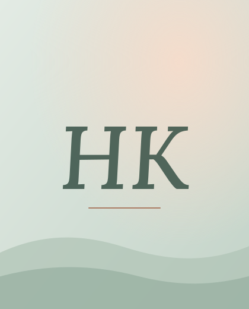

Klinik Psikolog · Başiskele, Kocaeli
Kendinize alan açmanın zamanı.
Kendinizi ve yaşadığınız süreçleri daha yakından anlamanıza, farkındalığınızı güçlendirmenize ve ihtiyaç duyduğunuz değişime alan açmanıza eşlik etmek için buradayım.
Çalışma Alanlarım
-
Bireysel Danışmanlık
Kendinizi daha yakından tanımanıza ve yaşadığınız zorlukları anlamlandırmanıza eşlik eden süreç.
Devamı -
Çocuk Danışmanlığı
Çocukların duygusal, davranışsal ve gelişimsel güçlüklerini anlamaya ve desteklemeye yönelik süreç.
Devamı -
Ergen Danışmanlığı
Ergenlik döneminin duygusal, sosyal ve gelişimsel güçlüklerinde ergene ve aileye destek.
Devamı -
Aile Danışmanlığı
Aile içi iletişimi ve ilişkileri anlamaya, yaşanan güçlükleri birlikte değerlendirmeye destek.
Devamı -
Çift ve Evlilik Danışmanlığı
İlişkideki iletişimi anlamaya, güçlükleri birlikte ele almaya ve ihtiyaçları ifade etmeye destek.
Devamı -
Akademik Süreç ve Sınav Kaygısı Danışmanlığı
Sınav kaygısı, performans baskısı, motivasyon ve ders çalışma süreçlerinde destek.
Devamı -
Online Danışmanlık
Psikolojik desteğe bulunduğunuz yerden, online görüşmelerle erişebilirsiniz.
Devamı -
Testler ve Ölçekler
WISC-IV, CAS, Moxo dikkat testi ve gelişim/duygudurum ölçekleriyle değerlendirme.
Devamı -
Emin değil misiniz?
Yaşadığınız zorluğun hangi alana girdiğini ön görüşmede birlikte değerlendirebiliriz.
Ön görüşme talebi
Çalışma alanım dışında kalan ihtiyaçlarınız için sizi uygun meslektaşlarıma yönlendirebilirim.
Kısa bir mola
Dilerseniz gelin, birlikte 4-4-6 ritmiyle nefes alalım :)
Yavaş ve düzenli nefes pratikleri, bedeninizi ve zihninizi sakinleştirmeye yardımcı olur. 4 saniye nefes alın, 4 saniye tutun ve 6 saniyede yavaşça verin.
Bu egzersiz tek başına bir terapi niteliği taşımamaktadır. Uygulama esnasında herhangi bir rahatsızlık hissederseniz (baş dönmesi vb.) egzersizi sonlandırarak normal nefes ritminize dönmeniz rica olunur.
Ön Görüşme Talep Formu
Bilgilerinizi bırakın, sizinle en kısa sürede iletişime geçelim. Kişisel verilerinizin güvenliği amacıyla bu formdaki bilgiler hiçbir veri tabanına kaydedilmez. Girdiğiniz veriler, tercih ettiğiniz iletişim kanalı (WhatsApp/SMS/E-posta) üzerinden otomatik ve güvenli bir mesaj taslağına dönüştürülür.
Hazır olduğunuzda, buradayım.
Kendinize alan açmak değerli bir adımdır. Bana dilediğiniz iletişim kanalından ulaşabilirsiniz. Size uygun bir zaman dilimini birlikte planlayalım.
